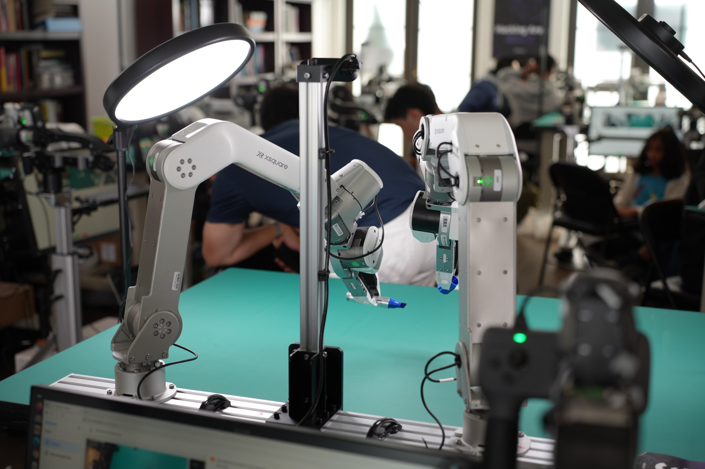
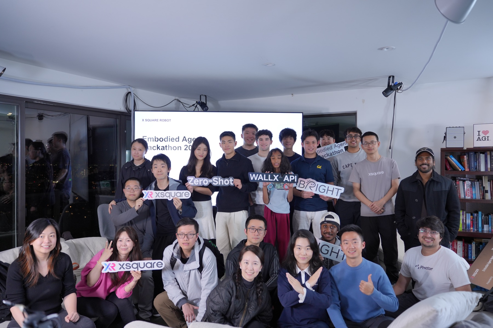

Perception & reasoning
GPT-6 Astra API reasoning works with SAM 3 segmentation to identify the requested objects and distinguish marker colors.
X Square Robot · BRIGHT 2.0 Hackathon
1st Place (Solo)212/240 pointsAll six cases completed
A complete robot system that identifies the requested marker, assembles its cap and body, and returns it to a changing target area—despite variations in color, position, orientation, and human interference.
I developed the full harness: a coordination layer connecting GPT-6 Astra reasoning, SAM 3 segmentation, and WALL-OSS 1.0 robot execution.

The robot had to pick the specified marker cap and body, align them for insertion, assemble the marker, and place it in the return area. The table contained visually similar markers distinguished by cap color, with parts placed at arbitrary positions and orientations.
Evaluation tested color and pose generalization, changing return locations, and robustness to human interference. The system ran on X Square Robot’s six-degree-of-freedom arm.
I participated independently and developed the complete VLA execution harness, coordinating perception, low-frequency decision-making, and high-frequency VLA execution.
GPT-6 Astra API reasoning works with SAM 3 segmentation to identify the requested objects and distinguish marker colors.
My harness selects targets and schedules the stages of grasping, alignment, insertion, and return, linking low-frequency decisions to robot execution.
WALL-OSS 1.0 API provides high-frequency action execution on the robot arm, coordinated by the harness.

All six cases were completed, with deductions on some scoring criteria. The score is 212 out of the 240 points available at my selected difficulty; the overall leaderboard displays a maximum of 300 across difficulty settings.
